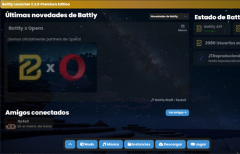
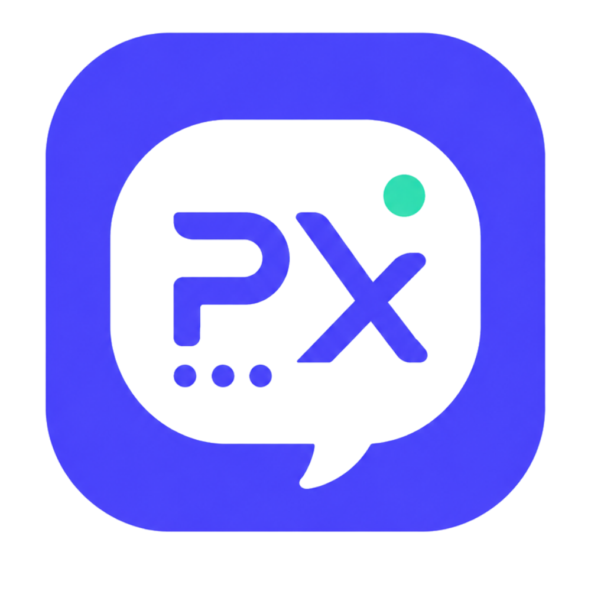
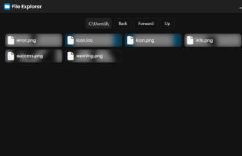
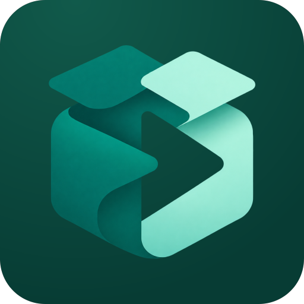
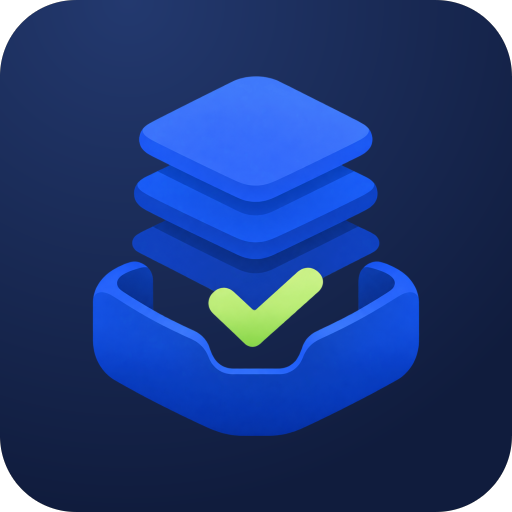
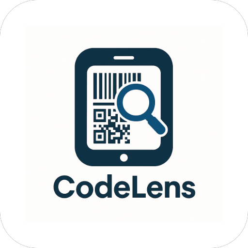
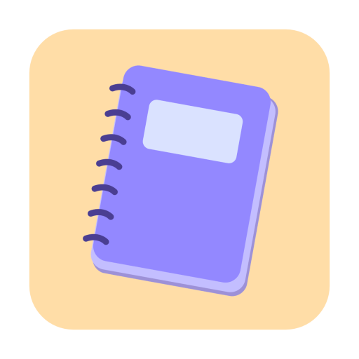
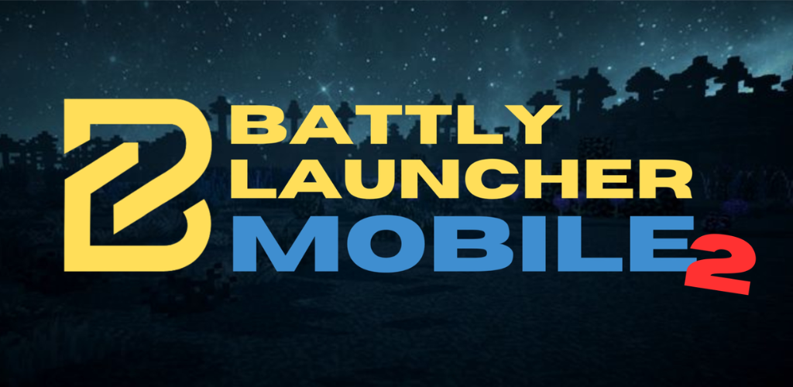

Battly Launcher
Tu punto de partida para jugar a Minecraft. Un launcher personalizable, con todo en un mismo lugar.
Hola, soy
Desarrollador full-stack.
Desarrollo apps, webs y
videojuegos.
Y siempre tengo algo entre manos.
Soy desarrollador full-stack y fundador de TECNO BROS Studios. Me gusta trabajar en todo el recorrido de un producto: desde la primera pantalla hasta lo que ocurre detrás.
Mi trabajo pasa por aplicaciones de escritorio, webs, bots y videojuegos. Battly, RACAR y NEO son algunas de las formas que ha tomado esa curiosidad.
Un vistazo a mi GitHub
Launchers, juegos y herramientas.
Cada proyecto, un reto
distinto.

Tu punto de partida para jugar a Minecraft. Un launcher personalizable, con todo en un mismo lugar.
Un shooter en primera persona con multijugador. Mi lado de desarrollo de videojuegos.
La plataforma web de Neobot, con su panel y recursos interactivos.

Estados personalizados para Discord desde Android, sin depender de un PC.

Un gestor de archivos para organizar y explorar tu información.

Convierte archivos AAB en un APK universal firmado, directamente desde Android y sin conexión.

Instala archivos XAPK desde tu Android. Elige el archivo y continúa, incluso sin conexión.

Escanea códigos QR y de barras desde tu Android, con una interfaz rápida y multilingüe.

Toma notas con formato y protégelas con PIN o biometría. Un editor para tener tus ideas a mano.

Minecraft: Java Edition en Android. Basado en PojavLauncher y adaptado al ecosistema Battly.
Los submódulos y proyectos que
forman parte del universo
Battly.
Minecraft: Java Edition en Android. Basado en PojavLauncher y adaptado al ecosistema Battly, para llevar el launcher al móvil.
Java · CVer repositorio ↗El launcher de Battly para Hytale: una aplicación propia que amplía el ecosistema más allá de Minecraft.
JavaScript · CSS · HTML · RustVer repositorio ↗El cliente de Minecraft de Battly, con mods para ampliar y personalizar la experiencia de juego.
JavaAgente Java que adapta la integración de perfiles y texturas de Battly en distintas versiones de Minecraft.
JavaVer repositorio ↗Túneles TCP para conectar con los servidores de Battly. La pieza de red que facilita el acceso a las partidas.
GoVer repositorio ↗La interfaz superpuesta de Battly Worlds, con seguimiento nativo de ventanas en Windows, Linux y macOS.
TypeScript · CSS · JavaScriptVer repositorio ↗El instalador oficial de Battly Launcher. La aplicación que acompaña al usuario en la instalación del launcher.
JavaScript · Rust · HTML · CSSVer repositorio ↗
Elijo las herramientas según el proyecto.
Estas son las que más
me acompañan.
Desde la primera pantalla hasta el último detalle. Webs e interfaces que se adaptan al dispositivo y aplicaciones que se sienten como en casa.
APIs, bots y automatización con Node.js. Aplicaciones de escritorio con Electron para llevar esas herramientas más allá del navegador.
Mecánicas, escenarios e interacción. Desarrollo de videojuegos con C# y Unity, y herramientas para el ecosistema de Minecraft.
Un proyecto, una colaboración o una oportunidad.
Cuéntame qué
estás pensando.